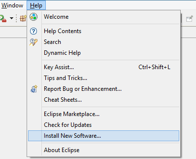
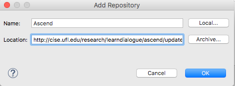
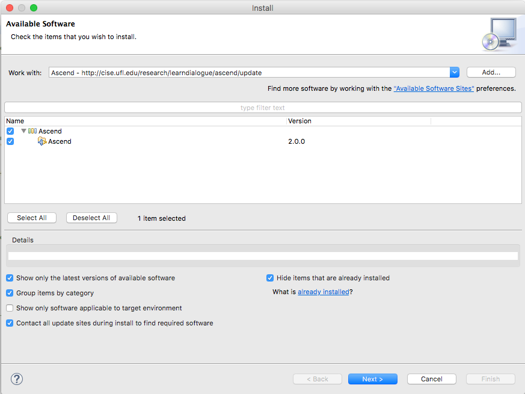
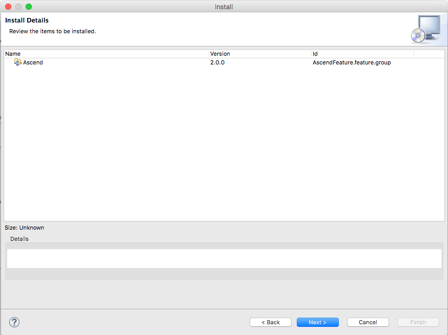
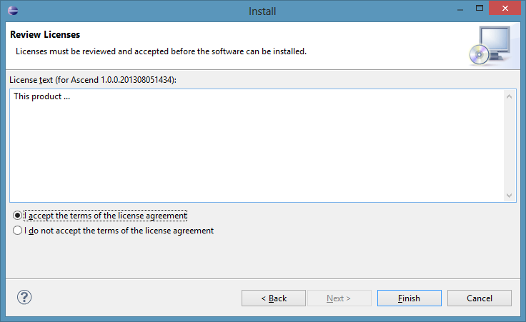
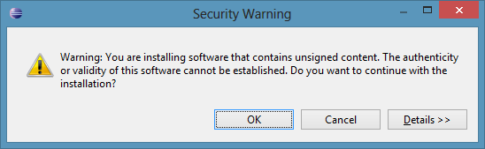
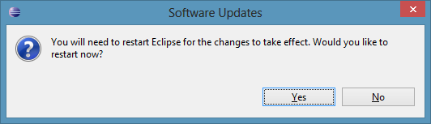

Installing AscendInstall Ascend after having installed and opened Eclipse
In the Eclipse menu bar, select [Help]-[Install New Software...]

Where it says, "Work with:", click Add (on the right). This will open up a pop-up window to add a repository.
Enter "Ascend" in the Name field and "http://cise.ufl.edu/research/learndialogue/ascend/update" in the Location field. Click OK.

Under the list, check "Select All" and click [Next]. (In the image below, note that the top-level label might say
something other than "Ascend")

Click [Next]

Select [I accept the terms of the license agreement] and click [Finish]

Click [OK]

Click [Yes]

Now that you have the Ascend plugin installed, go to this website's "How to Use" tab
to learn how to set up Ascend and use it for remote collaboration.